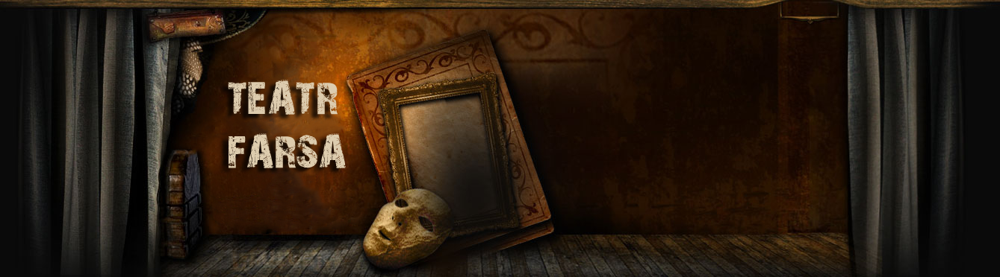
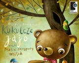
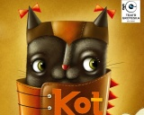

|
 |
| Aktualności Repertuar O teatrze Spektakle Bilety Galeria Kontakt |
SubskrypcjaChcesz otrzymać: |
Kukułcze jajo czyli ptasie przygody Misia Pełna ciepła i humoru historia Misia o bardzo dobrym serduszku, który pewnego dnia postanawia... wysiedzieć jajo. Decyzja ta staje się początkiem wielu zabawnych przygód, w które zamieszani są liczni mieszkańcy lasu. Przedstawienie zwraca uwagę na to, jak ważna jest tolerancja dla "inności" i uczy, że niejednokrotnie warto schować honor do kieszeni, kiedy w grę wchodzi pomoc słabszym. Ania z Zielonego Wzgórza – bilety już w sprzedażyGłówną bohaterką sztuki jest Anna Shirley – obdarzona bujną wyobraźnią i szalenie gadatliwa 11-letnia rudowłosa dziewczynka z sierocińca, która zostaje przygarnięta przez mieszkające na Zielonym Wzgórzu rodzeństwo Cuthbertów – Mateusza i Marylę. Na skutek pomyłki zamiast chłopca trafia do nich dziewczynka... Kot w Butach – już za miesiąc Stary młynarz przed śmiercią dzieli swój majątek między trzech synów. Najmłodszy dostaje tylko kota. Dziwi się, gdy spostrzega, że kot przemawia ludzkim głosem i obiecuje, że jeśli jego życie zostanie oszczędzone, pomoże młodzieńcowi się wzbogacić. W zamian prosi o buty oraz worek... |
| © Teatr Farsa - zadanie 2025-10-08 |